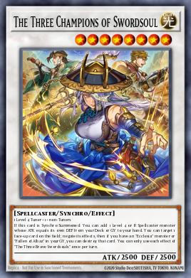
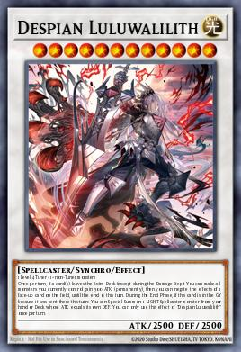
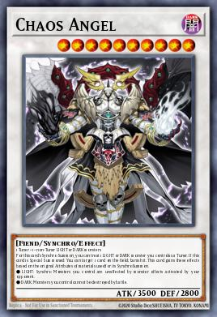
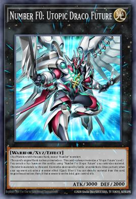
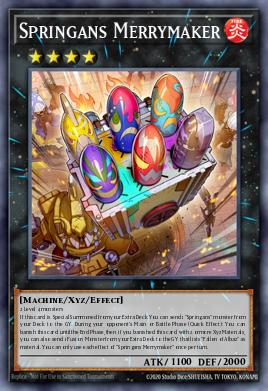
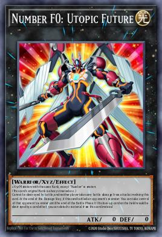
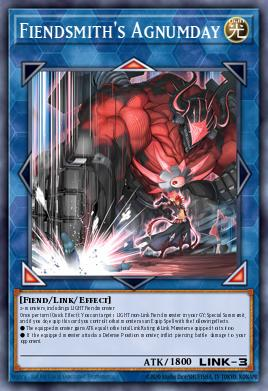

Station X · Guías visuales de 15 rutas Extra
Ámbito: validación lógica con texto oficial para el Yu-Gi-Oh! físico. Los dibujos son fotografías de cartas del inventario. No se ejecutó simulador ni partida real. Cada mano inicial es una precondición, no una probabilidad garantizada de robo. Las 15 rutas no sustituyen las 16 fichas Extra aún sin acceso.

The Three Champions of Swordsoul
Acceso legal con precondiciones · cotejo documentalMano y campo requeridos: Medius Nivel 4 en mano; Elfnote Power Patron Nivel 1 todavía en Deck; zona central libre; ningún bloqueo que impida Sincro.
Pasos de la jugada
- Invocar Normal a Medius fuera de la zona central.
- Resolver el efecto de Medius para Invocar desde Deck a Power Patron en el centro.
- Durante Main Phase, Power Patron selecciona al monstruo del centro (él mismo) y aumenta su Nivel de 1 a 4; declinar Invocación Sincro inmediata opcional.
- Invocar por Sincro en estado abierto: Power Patron Cantante Nivel 4 + Medius no Cantante Nivel 4 = The Three Champions of Swordsoul Nivel 8.
- Abrir cadena posterior de disparadores; separar búsqueda del Sincro y búsqueda de Patron enviado como material.
Campo y objetivo: Invocación Sincro legal en este estado condicional; búsquedas posteriores aún sujetas a objetivos disponibles y negaciones.
Límite / interrupción: Requiere condiciones de la ruta.
Texto oficial del monstruo del Extra
Ecclesia and the Dark Dragon
Acceso legal con precondiciones · cotejo documentalMano y campo requeridos: Medius en mano, Power Patron en Deck, centro libre, dos monstruos disponibles tras sus efectos y sin restricción que impida Sincro.
Pasos de la jugada
- Invocar Normal a Medius fuera del centro.
- Invocar Power Patron Nivel 1 desde Deck al centro por Medius.
- Power Patron se selecciona y aumenta tres Niveles (1→4); no realizar Sincro inmediata opcional.
- Sincronizar Patron Cantante Nivel 4 + Medius Nivel 4 para Ecclesia and the Dark Dragon Nivel 8.
- Si se usa su efecto rápido durante Main Phase, desterrarla temporalmente e Invocar un Albaz o monstruo apto desde Deck/GY; este paso exige un objetivo real.
Campo y objetivo: Acceso Sincro viable; la invocación posterior de Albaz es condicional y no constituye coste de la Sincro.
Límite / interrupción: Requiere condiciones de la ruta.
Texto oficial del monstruo del Extra
Despian Luluwalilith
Acceso legal con precondiciones · cotejo documentalMano y campo requeridos: Ecclesia L4 en mano y un monstruo Invocado desde Extra en cualquier campo; Medius L4 en mano; Patron L1 disponible en Deck y zona central libre.
Pasos de la jugada
- Con un monstruo Invocado desde Extra en algún campo, Invocar Especial a Dogmatika Ecclesia Nivel4 LUZ desde mano en una zona no central. NO activar su efecto de búsqueda.
- Invocar Normalmente a Medius Nivel4 OSCURIDAD en otra zona no central. Su efecto Invoca Especial a Elfnote Power Patron Nivel1 Cantante desde Deck en la zona central.
- Patron se selecciona a sí mismo en centro y gana 3 niveles para ser Cantante Nivel4. Declinar la invocación inmediata opcional del propio Patron.
- Durante estado abierto hacer Sincro normal con Patron Cantante4 + Ecclesia4 + Medius4 = Despian Luluwalilith Nivel12.
- En adelante, activar la negación de Luluwalilith solo DESPUÉS de que otra carta salga del Extra, por efecto o invocación, mientras ella permanezca en campo.
Campo y objetivo: Ecclesia se Invoca Especial sin activar su búsqueda (activarla bloquearía Invocaciones desde Extra). Normal Medius trae Patron al centro. Patron sube 1→4 y se declina su Sincro opcional. Sincro Luluwalilith L12 con Cantante Patron4 + Medius4 + Ecclesia4.
Límite / interrupción: La negación posterior de Luluwalilith exige que salga una carta del Extra Deck; no es una negación inmediata garantizada.
Texto oficial del monstruo del Extra
Ruddy Rose Dragon
Acceso legal con precondiciones · cotejo documentalMano y campo requeridos: Medius L4, Regina L6 y Lucina en mano; Patron L1 disponible en Deck; zona central libre.
Pasos de la jugada
- Invocar Normalmente a Medius fuera de la zona central; su efecto Invoca a Elfnote Power Patron de Deck en otra zona NO central.
- Activar efecto rápido de Regina en mano: ENVIAR Lucina de mano al GY como COSTE; Invocar Especial Regina al centro.
- Patron selecciona a Regina en el centro, aumenta sus niveles en 3: Regina6→9; DECLINAR Synchro inmediata especial.
- Hacer Invocación Sincro normal de Ruddy Rose Dragon LV10 usando Patron1 + Regina9; Medius LV4 permanece en campo.
- Abrir cadena de disparadores por Synchro: Ruddy (destierra todos los GY), Regina enviada como material (se recupera a mano) y Patron enviada como material (añade Elfnote). Ordenar la cadena para recuperar/añadir antes de desterrar GY.
Campo y objetivo: Normal Medius trae Patron a una zona lateral. Regina envía Lucina al GY para Invocarse al centro. Patron sube Regina de 6→9. Sincro Ruddy Rose L10 usando Patron1+Regina9.
Límite / interrupción: El destierro de ambos cementerios es opcional; NO destruir todo el campo sin Black Rose Dragon o Sincro Planta como material. Regina/Patron pueden encadenarse antes del destierro.
Texto oficial del monstruo del Extra
Chaos Angel
Acceso legal con precondiciones · cotejo documentalMano y campo requeridos: Fortuna Nivel 6 en mano, zona central libre, Medius Nivel 4 en mano, Invocación Normal disponible; no se exige Power Patron.
Pasos de la jugada
- Invocar Especialmente a Fortuna desde mano en la zona central por su procedimiento.
- Invocar Normal a Medius en otra zona.
- Usar el procedimiento de Chaos Angel para tratar a Medius OSCURIDAD de Nivel 4 como Cantante de esta Sincro.
- Sincronizar Medius Nivel 4 + Fortuna LUZ Nivel 6 = Chaos Angel Nivel 10.
- Después de Invocar, activar su destierro solo si existe un objetivo legal.
Campo y objetivo: Sincro condicional legal; materiales originales LUZ y OSCURIDAD habilitan sus protecciones según texto.
Límite / interrupción: Requiere condiciones de la ruta.
Texto oficial del monstruo del Extra
Number F0: Utopic Draco Future
Acceso legal con precondiciones · cotejo documentalMano y campo requeridos: Medius, Raiders, Elara y Command en mano; Patron en Deck, Amalthe en Deck, dos Diactorus y ambos F0 en Extra.
Pasos de la jugada
- Invocar Normalmente a Medius (Nivel 4); su efecto trae desde Deck Power Patron DoomZ (Nivel 1) al campo.
- Activar Power Patron DoomZ seleccionando el otro monstruo propio Medius LV4. Invocar por su procedimiento DoomZ Break - Diactorus #1 Rango 4 usando SOLO Medius como material; equipar a él Power Patron DoomZ.
- Activar DoomZ Raiders en Magia/Trampa. En Main resolver su efecto: destruir Elara desde mano y Especial desde Deck a Amalthe LV4.
- Equipar desde mano DoomZ Command "D.O.O.M.D.U.R.G." a Amalthe LV4. Activar efecto rápido de Amalthe equipada.
- Superponer los dos Diactorus Rango 4 (AMBOS no Number) para Number F0: Utopic Future.
- Sobreponer Number F0: Utopic Future debajo de Number F0: Utopic Draco Future mediante procedimiento alternativo escrito; transferir materiales de F0 a Draco.
Campo y objetivo: Medius trae Patron; Patron convierte Medius L4 en Diactorus #1 y se equipa; Raiders destruye Elara en mano para traer Amalthe L4; Command equipa Amalthe; Amalthe permite Diactorus #2; dos Diactorus Rank4 invocan F0 Utopic Future; este se superpone para Draco Future.
Límite / interrupción: Draco Future no se invoca directamente sobre los dos Diactorus: exige tres Xyz iguales o la alternativa de superponer sobre F0 original.
Texto oficial del monstruo del Extra
Springans Merrymaker
Acceso legal con precondiciones · cotejo documentalMano y campo requeridos: Amalthe y Raiders y Elara en mano; otra Elara en Deck; Merrymaker en Extra.
Pasos de la jugada
- Invocar Normalmente a Amalthe Nivel 4; puedes activar su búsqueda de otro DoomZ, pero no es indispensable para el acceso.
- Activar DoomZ Raiders (Continua) desde mano; usar su efecto en Main. Al resolver, destruir Elara en mano y ESPECIAL desde Deck otra copia de Elara Nivel 4.
- Tras resolver los disparos de Elara y Amalthe si se eligieron, superponer Amalthe + Elara para invocar por Xyz Springans Merrymaker (Rango 4).
Campo y objetivo: Normal Amalthe L4; Raiders destruye Elara desde mano y trae otra Elara L4 de Deck; superponer los dos Nivel4 para Merrymaker Rank4.
Límite / interrupción: El efecto de enviar Springans desde Deck carece de objetivo si el Main no contiene Springans. La invocación sigue siendo legal.
Texto oficial del monstruo del Extra
Gigantic "Champion" Sargas
Acceso legal con precondiciones · cotejo documentalMano y campo requeridos: La ruta de Merrymaker anterior, Sargas en Extra y un Therion o Springans buscable en Deck.
Pasos de la jugada
- Invocar Normalmente a Amalthe Nivel 4; puedes activar su búsqueda de otro DoomZ, pero no es indispensable para el acceso.
- Activar DoomZ Raiders (Continua) desde mano; usar su efecto en Main. Al resolver, destruir Elara en mano y ESPECIAL desde Deck otra copia de Elara Nivel 4.
- Tras resolver los disparos de Elara y Amalthe si se eligieron, superponer Amalthe + Elara para invocar por Xyz Springans Merrymaker (Rango 4).
- Superponer Merrymaker bajo Gigantic "Champion" Sargas (Rango 8) por su procedimiento alternativo de un Xyz Springans, transfiriendo los materiales.
- Activar Sargas para añadir del Deck Therion "King" Regulus (17119), presente 1x.
Campo y objetivo: Invocar Merrymaker con Amalthe y Elara. Sobreponer a Sargas mediante su procedimiento alternativo sobre un Xyz Springans. Con materiales, buscar Therion King Regulus del Deck.
Límite / interrupción: Si no queda objetivo buscable, Sargas se invoca pero no ejecuta búsqueda; el efecto de remoción necesita un desacople ocurrido en el campo.
Texto oficial del monstruo del Extra
Number F0: Utopic Future Zexal
Acceso legal con precondiciones · cotejo documentalMano y campo requeridos: Medius, Raiders, Elara y Command en mano; Patron Deck, Amalthe Deck, dos Diactorus en Extra.
Pasos de la jugada
- Invocar Normalmente a Medius (Nivel 4); su efecto trae desde Deck Power Patron DoomZ (Nivel 1) al campo.
- Activar Power Patron DoomZ seleccionando el otro monstruo propio Medius LV4. Invocar por su procedimiento DoomZ Break - Diactorus #1 Rango 4 usando SOLO Medius como material; equipar a él Power Patron DoomZ.
- Activar DoomZ Raiders en Magia/Trampa. En Main resolver su efecto: destruir Elara desde mano y Especial desde Deck a Amalthe LV4.
- Equipar desde mano DoomZ Command "D.O.O.M.D.U.R.G." a Amalthe LV4. Activar efecto rápido de Amalthe equipada.
- Superponer los dos Diactorus Rango 4 para Number F0: Utopic Future Zexal; su requisito son dos Xyz del mismo Rango.
Campo y objetivo: Producir Diactorus #1 con Medius+Patron y Diactorus #2 con Amalthe equipada tras Raiders. Dos Xyz Rank4 forman Number F0: Utopic Future Zexal directamente.
Límite / interrupción: No confundir este monstruo con Number S0: Utopic ZEXAL. Su efecto rápido de tomar control exige activación rival de carta o efecto en campo.
Texto oficial del monstruo del Extra
Number F0: Utopic Future
Acceso legal con precondiciones · cotejo documentalMano y campo requeridos: Misma mano de cuatro cartas de la ruta DoomZ F0; dos Diactorus no Number en Extra.
Pasos de la jugada
- Invocar Normalmente a Medius (Nivel 4); su efecto trae desde Deck Power Patron DoomZ (Nivel 1) al campo.
- Activar Power Patron DoomZ seleccionando el otro monstruo propio Medius LV4. Invocar por su procedimiento DoomZ Break - Diactorus #1 Rango 4 usando SOLO Medius como material; equipar a él Power Patron DoomZ.
- Activar DoomZ Raiders en Magia/Trampa. En Main resolver su efecto: destruir Elara desde mano y Especial desde Deck a Amalthe LV4.
- Equipar desde mano DoomZ Command "D.O.O.M.D.U.R.G." a Amalthe LV4. Activar efecto rápido de Amalthe equipada.
- Superponer los dos Diactorus Rango 4 (AMBOS no Number) para Number F0: Utopic Future.
Campo y objetivo: Medius→Patron→Diactorus #1; Raiders destruye Elara→Amalthe; Command equipa Amalthe→Diactorus #2; superponer dos Rank4 no Number para F0.
Límite / interrupción: La toma de control de F0 ocurre al final del Damage Step cuando batalla; no es un robo inmediato durante Main Phase.
Texto oficial del monstruo del Extra
Gagagaga Magician
Acceso legal con precondiciones · cotejo documentalMano y campo requeridos: Amalthe, Raiders y Elara en mano; otra Elara en Deck; Gagagaga Magician en Extra.
Pasos de la jugada
- Invocar Normalmente a Amalthe Nivel 4; puedes activar su búsqueda de otro DoomZ, pero no es indispensable para el acceso.
- Activar DoomZ Raiders (Continua) desde mano; usar su efecto en Main. Al resolver, destruir Elara en mano y ESPECIAL desde Deck otra copia de Elara Nivel 4.
- Tras resolver los disparos de Elara y Amalthe si se eligieron, superponer Amalthe + Elara para invocar por Xyz Gagagaga Magician (Rango 4).
Campo y objetivo: Normal Amalthe4, Raiders destruye Elara de mano e Invoca otra Elara4 de Deck; ambos forman Gagagaga Magician Rank4.
Límite / interrupción: Su efecto de revivir requiere otro Xyz existente en GY; en este estado inicial vacío NO hay objetivo y no se debe anunciar ese efecto.
Texto oficial del monstruo del Extra
Fiendsmith's Agnumday
Acceso legal con precondiciones · cotejo documentalMano y campo requeridos: Engraver en mano; Tract, Lurrie y Lacrima Crimson en Deck; Requiem, Sequence, Fusion Lacrima y Agnumday en Extra.
Pasos de la jugada
- Activar Fiendsmith Engraver desde mano: DESCARTARLO como coste; añadir del Deck Fiendsmith's Tract (20240).
- Activar Fiendsmith's Tract: añadir Fabled Lurrie (8092) del Deck y después DESCARTARLO por resolución (no coste).
- Usar Lurrie (LIGHT Fiend Nivel 1) para Invocación por Enlace de Fiendsmith's Requiem (20225), Link 1.
- Tributar Requiem como coste para Invocar Especial desde Deck a Lacrima the Crimson Tears (20490, Nivel4 LIGHT Fiend).
- Opcional, Lacrima Crimson al llegar puede mandar otra carta Fiendsmith del Deck al GY; no se necesita para el camino base.
- En GY, Engraver (descartado inicialmente) devuelve Requiem LIGHT Fiend del GY al Extra Deck como coste y se Invoca Especial.
- Enlazar Engraver + Lacrima Crimson para Fiendsmith's Sequence Link2 (requiere incluir LIGHT Fiend).
- Sequence activa su efecto de Fusión en Main; barajar desde GY Engraver + Lacrima Crimson (ambos LIGHT Fiend) para Invocar Fiendsmith's Lacrima (Fusion LV6).
- Invocar Agnumday Link3 usando Sequence como valor Link2 + Fiendsmith's Lacrima como valor1; dos cuerpos, uno LIGHT Fiend.
- Nueva cadena de la Fusion Lacrima enviada al GY: si aún tienes Lurrie LIGHT Fiend en GY, barajarlo para infligir 1200. Después, Agnumday puede seleccionar Fusion Lacrima en GY, Invocarla y equiparse a ella como Equip Spell.
Campo y objetivo: Descartar Engraver→Tract; Tract busca y descarta Lurrie que se Invoca; Lurrie→Requiem; tributar Requiem para traer Lacrima Crimson; Engraver desde GY devuelve Requiem al Extra e Invoca; Engraver+Lacrima→Sequence; Sequence Fusion invoca Lacrima usando esos dos del GY; Sequence Link2 + Fusion Lacrima forman Agnumday Link3.
Límite / interrupción: La Fusion Lacrima requiere dos Demonios LUZ (ambos disponibles). La invocación posterior/equipado por Agnumday requiere objetivo Demonio LUZ no Link en GY; no simular batalla.
Texto oficial del monstruo del Extra
Spright Sprind
Acceso legal con precondiciones · cotejo documentalMano y campo requeridos: Fenrir y Merrli en mano, campo propio vacío, Sprind en Extra.
Pasos de la jugada
- Con campo propio vacío, Invocar Especial a Kashtira Fenrir Lv7 desde mano por su condición.
- Invocar Normalmente a Tearlaments Merrli Nivel2; su mill de 3 al Invocarse es opcional y puede resolverse si es oportuno.
- Invocar por Enlace Spright Sprind Link2 con Fenrir y Merrli (se cumple el requisito de incluir un monstruo Nivel2).
- No activar el efecto de Sprind que manda Nivel2 del Deck si no queda OTRO Nivel2 real. En inventario no figura segunda Merrli ni otra carta Nivel2 en Main.
Campo y objetivo: Invocar Especial Fenrir por su condición de campo vacío. Normal Merrli Nivel2. Enlazar Fenrir + Merrli para Spright Sprind Link2 (incluye monstruo Nivel2).
Límite / interrupción: No activar el envío de Nivel2 al cementerio si la lista no tiene otro objetivo Nivel2 en Deck. Sprind no puede utilizarse de material Link ese turno.
Texto oficial del monstruo del Extra
Pilgrim Reaper
Acceso legal con precondiciones · cotejo documentalMano y campo requeridos: Engraver en mano, segunda copia Engraver en Deck, Tract y Lurrie en Deck; Requiem en Extra.
Pasos de la jugada
- Activar Fiendsmith Engraver desde mano: DESCARTARLO como coste; añadir del Deck Fiendsmith's Tract (20240).
- Activar Fiendsmith's Tract: añadir Fabled Lurrie (8092) del Deck y después DESCARTARLO por resolución (no coste).
- Usar Lurrie (LIGHT Fiend Nivel 1) para Invocación por Enlace de Fiendsmith's Requiem (20225), Link 1.
- Tributar Fiendsmith's Requiem como COSTE para Invocar Especial del Deck una SEGUNDA copia de Fiendsmith Engraver (Nivel6 LIGHT Fiend).
- Desde GY, activar el Engraver #1 descartado antes; devolver al Deck el Fabled Lurrie LIGHT Fiend que quedó en GY como material de Requiem.
- Superponer los 2 Engraver Nivel6 para Pilgrim Reaper Rank6. Opcional: desacoplar 1 material para mandar las 5 cartas superiores de AMBOS Decks al GY.
Campo y objetivo: Descartar Engraver→Tract→Lurrie descartada y auto-Invocada; Link Requiem con Lurrie; tributar Requiem para traer Engraver #2 de Deck; Engraver #1 desde GY devuelve Lurrie de GY a Deck y se Invoca; dos Nivel6 forman Pilgrim Reaper.
Límite / interrupción: Su desacople envía cinco cartas de AMBOS Decks; calcular riesgo de recursos propios y de activar efectos rivales.
Texto oficial del monstruo del Extra
Evilswarm Exciton Knight
Acceso legal con precondiciones · cotejo documentalMano y campo requeridos: Reinoheart y Scheiren y otro monstruo descartable en mano; rival con más cartas entre mano+campo que tú en la ventana de activación.
Pasos de la jugada
- Normal Summon a Reinoheart Nivel4; su envío Tearlaments desde Deck al GY es opcional y no se presupone para esta línea.
- Activar Scheiren en mano: Especial Scheiren Nivel4, y al resolver ENVIAR otro monstruo desde mano al GY, luego enviar 3 cartas superiores del Deck al GY.
- Xyz Summon Evilswarm Exciton Knight Rank4 usando ambos monstruos.
- Si el rival tiene MÁS cartas en mano+campo que tú, durante Main propia o Battle rival activar efecto de Exciton desacoplando un material: destruir todas las otras cartas en campo.
Campo y objetivo: Normal Reinoheart4. Especial Scheiren4, envía otro monstruo desde mano al GY y tres cartas desde Deck al GY. Superponer ambos Nivel4 para Evilswarm Exciton Knight.
Límite / interrupción: Su destrucción global NO es incondicional: requiere desventaja numérica y Main propia o Battle rival; tras resolver impide daño al adversario ese turno.
Texto oficial del monstruo del Extra